PPC Calibration - Calibration of Bayesian models with binary outcomes
Florence Bockting
2026-08-11
Source:vignettes/articles-online-only/ppc-calibration.Rmd
ppc-calibration.Rmd
library(brms)
library(dplyr)
library(rstanarm)
library(ggplot2)
library(patchwork)
SEED <- 840
set.seed(SEED)Overview
This vignette introduces the PPC calibration family
of functions in bayesplot, which assess the calibration of
Bayesian models with binary outcomes by examining the agreement between
predicted probabilities and observed event rates.
A model is well-calibrated when its predicted probabilities match empirical event frequencies. For example, among all observations where the model assigns a 30% probability, roughly 30% of events should actually occur. Deviations from this pattern signal systematic over- or underprediction.
This vignette explains the underlying methodology, walks through the core plotting functions and their customization options, and showcases the use of calibration plots in a real-world example.
Methodological Background
Conditional Event Probabilities (CEP)
Following Dimitriadis, Gneiting, and Jordan (2021),
bayesplot estimates the Conditional Event Probability
(CEP), defined as the true underlying probability of an event given the
model-assigned predicted probability \(p\).
Formally, if the model predicts \(p\) for an observation, the CEP answers: “Among all observations that received this prediction, what fraction actually had the event?”
A perfectly calibrated model has a CEP function equal to the identity, that is, CEP(\(p\)) = \(p\) for all \(p\). When plotted, this produces a 45-degree diagonal reference line. Deviations from the diagonal reveal miscalibration.
Estimating the CEP: the PAV Algorithm
To estimate the CEP from data, bayesplot uses the
Pool Adjacent Violators (PAV) algorithm (Ayer et al.,
1955). For more details see Dimitriadis et al. (2021) and Säilynoja et
al. (2025). The PAV algorithm solves an isotonic regression problem: it
finds the monotone non-decreasing step function that best fits the
binary outcomes as a function of the ordered predicted
probabilities.
The estimation procedure has three steps which are described below and illustrated with a toy example consisting of 8 observations with their predicted probabilities \(p_i\) and binary outcomes \(y_i\) for \(i = 1, \ldots, 8\).
Step 1: Sort by predicted probability
Order observations by their predicted probability.
df_toy <- data.frame(
p = c(0.05, 0.10, 0.20, 0.30, 0.45, 0.60, 0.75, 0.90),
y = c(0, 0, 1, 0, 1, 1, 0, 1)
)
df_toy
#> p y
#> 1 0.05 0
#> 2 0.10 0
#> 3 0.20 1
#> 4 0.30 0
#> 5 0.45 1
#> 6 0.60 1
#> 7 0.75 0
#> 8 0.90 1Step 2: Fit a monotone step function with PAV
Apply the PAV algorithm to the ordered outcomes. The result is a piecewise- constant, non-decreasing estimate of the CEP at each predicted probability \(p_i\).
Step 3: Plot CEP against predicted probability
Plot the estimated step function with predicted probabilities \(p_i\) on the x-axis and CEP on the y-axis. The diagonal reference line marks perfect calibration.
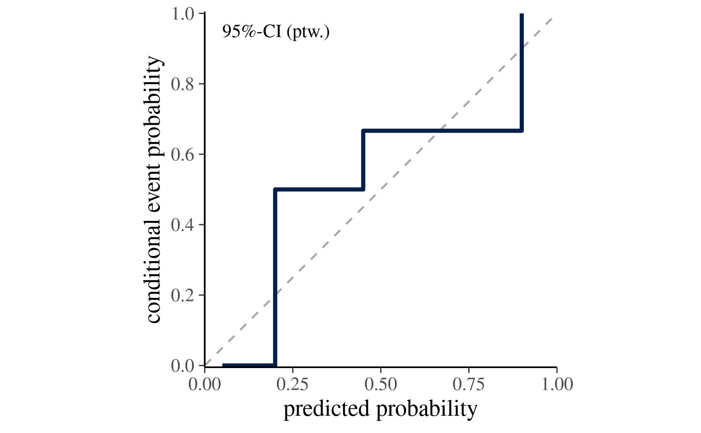
Dimitriadis et al. (2021) estimate CEP using point estimates of the
probabilities (i.e., one probability per binary observation) as
implemented in the reliabilitydiag package. For a fitted
Bayesian model, the CEP is estimated for each posterior draw separately
based on the predicted probabilities from the posterior predictive
distribution. In the following code block we adjust the toy example by
simulating \(S=100\) draws of predicted
probabilities for each observation.
S <- 100
N <- length(df_toy$y)
# simulate a matrix of predicted probabilities of dimension S x N
prep <- t(replicate(S, pmin(pmax(df_toy$p + rnorm(N, 0, 0.08), 0), 1)))
df_toy_draws <- list(p = prep, y = df_toy$y)The calibration curve can then be plotted for each draw using
ppc_calibration_overlay(). The resulting plot shows the
draw-to-draw variability in the calibration curve.
Alternatively, ppc_calibration() can be used to
summarize the draw-specific curves into a single calibration curve with
an uncertainty band. The next section explains how the uncertainty
intervals are constructed.
ppc_calibration(y = df_toy$y, prep = df_toy_draws$p, show_qdots = FALSE)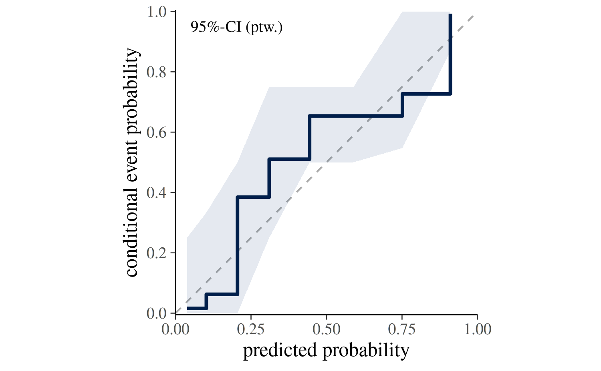
Uncertainty Intervals
ppc_calibration() summarizes the draw-specific curves
into a single calibration curve with an uncertainty band. The plotting
function supports two strategies for propagating uncertainty via the
interval argument.
Estimation uncertainty (interval = "confidence"):
The default setting interval = "confidence" answers the
question: Where does the calibration curve of our model lie?.
It reflects the uncertainty in the CEP induced by variation across
posterior draws.
If posterior probability draws are provided via prep,
the confidence band is constructed as follows:
- For each posterior draw \(s\), sort observations \(y_i\) by posterior predictions \(p_i^{(s)}\).
- Estimate for each posterior draw a CEP curve.
- Take pointwise quantiles of the draw-specific CEP values across all
\(S\) draws (e.g., 2.5% and 97.5% for
prob = 0.95) to form the ribbon.
The central step curve is the pointwise posterior mean of the draw-specific curves.
In the ppc_calibration() plot, this interval type is
labeled 95%-CI (ptw.), indicating a pointwise confidence
interval for the CEP curve whose bounds are the 2.5% and 97.5% quantiles
of the draw-specific CEP curves. The probability can be adjusted with
the prob argument.
If posterior predictions are provided via yrep, the
confidence band is constructed by bootstrapping the observed data and
re-estimating the CEP curve for each bootstrap sample.
Posterior predictive consistency
(interval = "consistency")
The setting interval = "consistency" answers the
question: If the model is correctly specified, where would we expect
the calibration curve to fall? The band is constructed as
follows:
- For each draw \(s\) and its sorted posterior predictions \(p_i^{(s)}\), simulate replicated outcomes \(\tilde{y}_i^{(s)} \sim \mathrm{Bernoulli}(p_i^{(s)})\).
- Estimate for each replicated outcome a CEP curve.
- Take pointwise quantiles of the CEP values across all \(S\) draws to form the ribbon.
The central curve is still estimated from the observed outcomes. If the observed curve falls outside the consistency band, the model is self-inconsistent, that is, its predictions do not match the data-generating distribution it implies.
In the ppc_calibration() plot, this interval type is
labeled 95%-CsI (ptw.), indicating a pointwise consistency
interval for the CEP curve whose bounds are the 2.5% and 97.5% quantiles
of the draw-specific CEP curves. The probability can be adjusted with
the prob argument.
The following figure shows for the toy example the calibration curve with both types of intervals. The confidence band (left) reflects the uncertainty in the CEP curve based on posterior variability and the consistency band (right) reflects where the calibration curve is expected to lie if the model is calibrated.
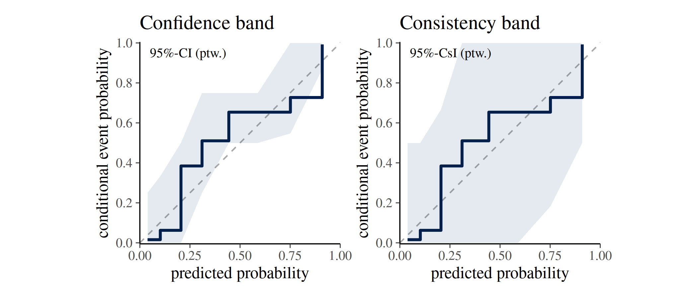
Calibrated vs. Miscalibrated: an Illustration
The following figure contrasts a calibrated and a miscalibrated model fitted to simulated data, and demonstrates the interpretation of the diagonal reference line introduced above.
We simulate \(n=600\) observations of a single predictor \(x \sim N(0,1)\) and generate two binary outcomes.
The calibrated outcome follows a logistic model linear in \(x\), so the same linear model fitted by
brm()is correctly specified and its predictions should align with the observed event rates.The miscalibrated outcome is generated from a model that also includes a quadratic term \(0.9 \times x^2\), which the fitted linear model cannot capture; this systematic misspecification causes the predicted probabilities to diverge from the true event rates.
Both models share the same weakly informative priors and are fitted with a single chain for illustration purposes.
n <- 600
x <- rnorm(n)
y <- rbinom(n, size = 1, prob = plogis(-0.5 + 1.2 * x))
y_mis <- rbinom(n, size = 1, prob = plogis(-0.5 + 1.2 * x + 0.9 * x^2))
df <- data.frame(y = y, x = x)
df_mis <- data.frame(y = y_mis, x = x)
fit_model <- function(df, seed) {
brm(
formula = y ~ x,
data = df,
family = bernoulli(link = "logit"),
prior = c(
prior(normal(0, 2.5), class = "b"),
prior(normal(0, 5), class = "Intercept")
),
chains = 1,
seed = seed,
refresh = 0
)
}
fit_calib <- fit_model(df, SEED)
fit_miscalib <- fit_model(df_mis, SEED)
prep <- posterior_epred(fit_calib)
prep_mis <- posterior_epred(fit_miscalib)
yrep <- posterior_predict(fit_calib)
yrep_mis <- posterior_predict(fit_miscalib)While the curve in the calibrated model (left) tracks the diagonal closely, the miscalibrated model (right) shows a systematic deviation from the diagonal reference line.
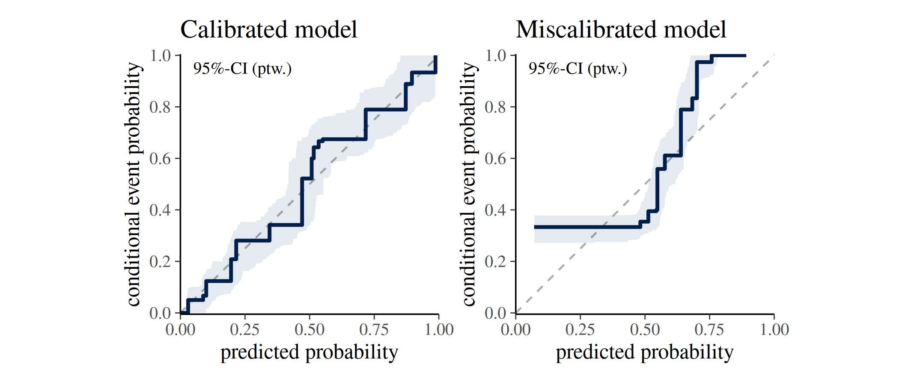
Overview of ppc-calibration functions and customization options
In the following an overview of the core ppc_calibration
functions is provided, along with explanations of their input arguments
and customization options.
ppc_calibration_data() — the underlying data
structure
ppc_calibration_data() computes the data that the
ppc_calibration plots are built on. Understanding its
output helps to work with or extend the visualisations or to build
custom calibration plots.
The type argument controls the type of data returned.
Setting type = "overlay" returns the data for the
draw-specific curves displayed in ppc_calibration_overlay()
and its _grouped variant. It has a row for each observation
and posterior draw, so the number of rows equals \(N \times S\) where \(N\) is the number of observations and \(S\) is the number of posterior draws.
dat <- ppc_calibration_data(y = y, prep = prep, type = "overlay")
print(head(dat, 5))
#> # A tibble: 5 × 5
#> group y_id rep_id value cep
#> <dbl> <int> <int> <dbl> <dbl>
#> 1 1 311 1 0.00199 0
#> 2 1 311 2 0.00323 0
#> 3 1 311 3 0.00146 0
#> 4 1 311 4 0.00169 0
#> 5 1 311 5 0.00566 0
paste("nrow:", nrow(dat))
#> [1] "nrow: 600000"While type = "interval" returns the data format
underlying ppc_calibration() and its _grouped
and _loo variants. This data frame has a row for each
observation, so the number of rows equals \(N\) and the data are aggregated across
posterior draws to form the uncertainty interval.
dat2 <- ppc_calibration_data(y = y, prep = prep, type = "interval")
print(head(dat2, 5))
#> # A tibble: 5 × 6
#> group y_id value cep lb ub
#> <dbl> <int> <dbl> <dbl> <dbl> <dbl>
#> 1 1 1 0.00341 0 0 0
#> 2 1 2 0.00713 0 0 0
#> 3 1 3 0.00999 0 0 0
#> 4 1 4 0.0106 0 0 0
#> 5 1 5 0.0158 0 0 0
paste("nrow:", nrow(dat2))
#> [1] "nrow: 600"The data structure of both types is a long-format data frame with
columns group, y_id, value, and
cep. For type = 'overlay' an additional column
rep_id is included reflecting the posterior draw index and
for type = 'interval' additional columns lb
and ub are included for the lower and upper bounds of the
uncertainty interval.
A short description of the columns is provided in the following table:
| Column | Description |
|---|---|
group |
Group label; if group = NULL, all observations belong
to one group. (factor or double) |
y_id |
Observation index (\(i = 1, \ldots, n_z\) within group \(z\)). (integer) |
value |
Sorted predicted probabilities \(p_i^{(s)}\). (double) |
cep |
Conditional event probability \(cep_i^{(s)}\). (double) |
rep_id |
type = 'overlay': Posterior draw index (\(s = 1, \ldots, S\)). (integer) |
lb |
type = 'interval': Lower bound of the uncertainty
interval. (double) |
ub |
type = 'interval': Upper bound of the uncertainty
interval. (double) |
ppc_calibration_overlay() — one curve per posterior
draw
ppc_calibration_overlay() draws one calibration curve
per posterior draw, making it a useful tool for exploring the
variability in calibration across posterior draws.
In the following we use the simulated data from the previous section to compare the draw-specific calibration curves of the calibrated and miscalibrated models. The plot shows that the curves from the calibrated model (left) cluster around the diagonal reference line, while those from the miscalibrated model (right) deviate from it for lower predicted probabilities.
p1 <- ppc_calibration_overlay(y = y, prep = prep) +
labs(title = "Calibrated")
p2 <- ppc_calibration_overlay(y = y, prep = prep_mis) +
labs(title = "Miscalibrated")
p1 + p2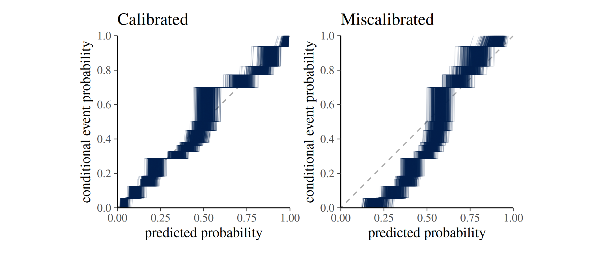
Grouped data
When observations belong to subgroups,
ppc_calibration_overlay_grouped() produces a faceted
plot.
For illustration, we define for our simulated data a grouping variable by assigning the first half of the simulated observations to group A and the second half to group B.
group <- rep(c("A", "B"), each = n / 2)
ppc_calibration_overlay_grouped(y = y, prep = prep, group = group)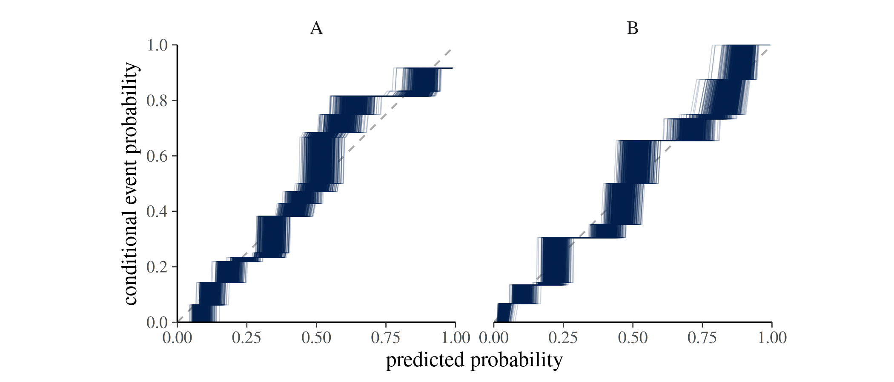
ppc_calibration() — calibration curve with uncertainty
bands
ppc_calibration() is the main plotting function. It
displays the calibration curve together with an uncertainty band. The
meaning of the band depends on the interval argument (as
discussed above).
Expected input arguments
ppc_calibration() expects the following input
arguments:
-
Core data
-
y: numeric vector of observed outcomes of lengthN, noNA, with values in[0, 1](typically binary0/1). - Exactly one of:
-
prep: numericS x Nmatrix of predicted probabilities in[0, 1], noNA, whereSrefers to the number of posterior draws. -
yrep: numericS x Nmatrix of posterior predictive draws, noNA(typically binary draws), whereSrefers to the number of posterior draws.
-
-
ncol(prep)orncol(yrep)must equallength(y).
-
-
Interval controls
-
prob: a single value strictly between0and1. -
interval: one of"confidence"or"consistency". -
B: ifinterval = "consistency": positive integer indicating number of bootstrap samples.
-
-
Plot controls
-
help_text: whether label (e.g.,95%-CI (ptw.)) is shown. -
show_mean: logical; whether the mean calibration curve is shown. -
show_qdots: logical; whether the marginal distribution of predicted probabilities is shown as a quantile dot plot along the x-axis. -
qdots_quantiles: positive integer; number of quantiles to display in the quantile dot plot (only ifshow_qdots = TRUE).
-
-
Styling
-
linewidth,alpha: passed to ggplot geoms.
-
Because the function signature is
ppc_calibration(y, prep = NULL, yrep = NULL, ...), an
unnamed second matrix argument is interpreted as prep. Use
yrep = ... explicitly when supplying posterior predictive
draws.
interval and prob — uncertainty
intervals
The interval argument controls the type of uncertainty
interval displayed in the plot. The prob argument controls
the width of the interval (e.g., 0.95 for a 95% interval).
See the section on Uncertainty
Intervals above for details.
The following plot shows the calibration curves for the simulated calibrated and miscalibrated models, with both confidence intervals (top row) and consistency intervals (bottom row).
p1 <- ppc_calibration(y = y, yrep = yrep) +
labs(title = "Calibrated model")
p2 <- ppc_calibration(y = y, yrep = yrep_mis) +
labs(title = "Miscalibrated model")
p3 <- ppc_calibration(y = y, yrep = yrep, interval = "consistency")
p4 <- ppc_calibration(y = y, yrep = yrep_mis, interval = "consistency")
p1 + p2 + p3 + p4 + plot_layout(ncol = 2)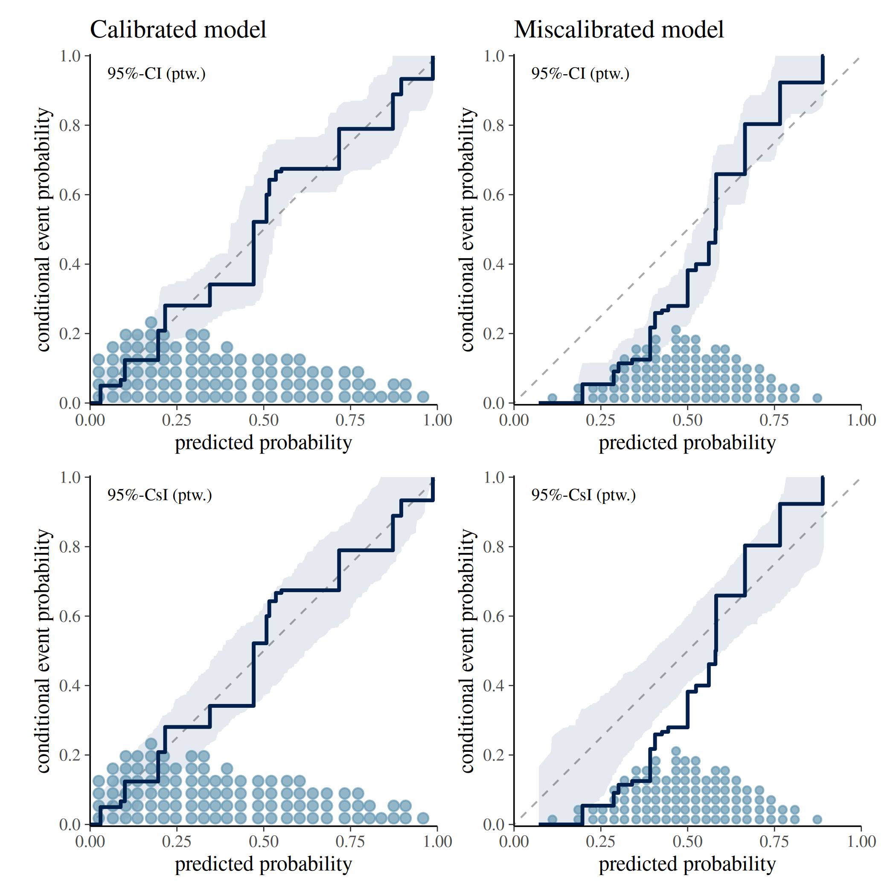
show_qdots and qdots_quantiles — quantile
dot plot
Setting show_qdots = TRUE overlays a quantile dot plot
along the x-axis, showing the marginal distribution of predicted
probabilities. Each dot represents an empirical quantile. By default
qdots_quantiles = 100 dots are displayed. See Säilynoja et
al. (2025) for methodological details.
The following plot shows the calibration curves for the simulated calibrated and miscalibrated models, with quantile dot plots along the x-axis showing the distribution of predicted probabilities. The top row shows 100 quantiles, while the bottom row shows 300 quantiles.
p1 <- ppc_calibration(y = y, yrep = yrep) +
labs(title = "Calibrated model \n # qdots = 100")
p2 <- ppc_calibration(y = y, yrep = yrep_mis) +
labs(title = "Miscalibrated model \n # qdots = 100")
p3 <- ppc_calibration(y = y, yrep = yrep, qdots_quantiles = 300) +
labs(title = "# qdots = 300")
p4 <- ppc_calibration(y = y, yrep = yrep_mis, qdots_quantiles = 300) +
labs(title = "# qdots = 300")
p1 + p2 + p3 + p4 + plot_layout(ncol = 2)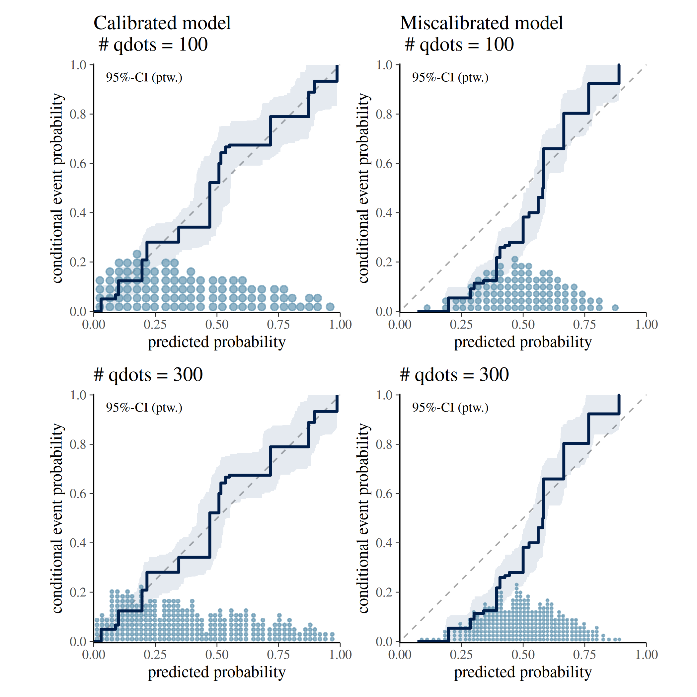
help_text — interpretive caption
A short caption appears in the plot by default
(help_text = TRUE) which provides information about the
interval type and probability. This is intended to help users interpret
the plot correctly. It can be suppressed by setting
help_text = FALSE.
The following plot shows the calibration curve for the simulated calibrated model with and without the interpretive caption.
p1 <- ppc_calibration(y = y, yrep = yrep, help_text = TRUE)
p2 <- ppc_calibration(y = y, yrep = yrep, help_text = FALSE)
p1 | p2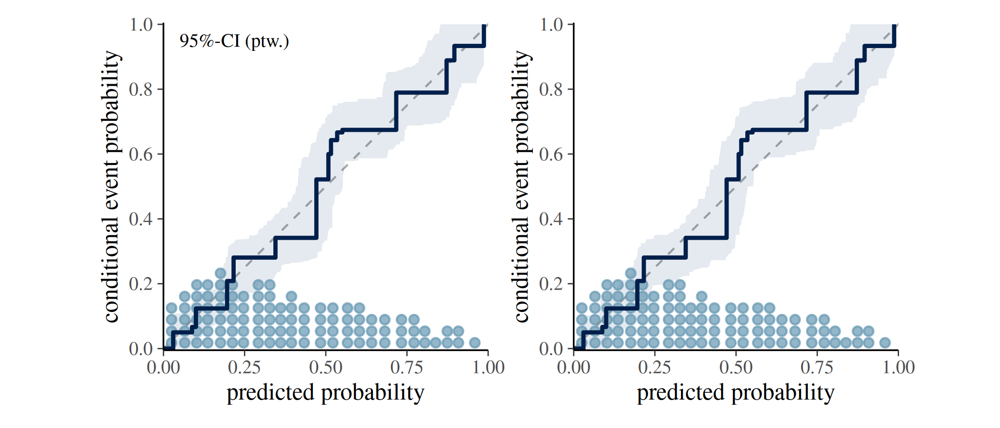
ppc_loo_calibration() — LOO-adjusted calibration
curve
ppc_loo_calibration() is a variant of
ppc_calibration() that incorporates importance weights from
a leave-one-out (LOO) analysis. Weights can be provided directly via the
lw argument; alternatively, a psis_object can
be passed and the weights will be computed internally.
As with ppc_calibration(), a grouped version
ppc_loo_calibration_grouped() is available that produces a
faceted plot when a grouping variable is supplied.
Real-World Example: Modelling Roach Infestation
The following example is drawn from Säilynoja et al. (2025) and uses
the roaches dataset from rstanarm. The data
records the number of roaches caught in traps across 264 apartments
assigned to a treatment or control condition. We compare two count-data
models for the binary outcome “at least one roach observed”:
- A negative binomial model (fitted with
rstanarm::stan_glm()). - A zero-inflated negative binomial model (fitted
with
brms::brm()).
For a complete Bayesian workflow using this dataset see also Aki Vehtari’s case study Roaches cross-validation model checking and comparison.
SEED <- 840
data(roaches, package = "rstanarm")
roaches$sqrt_roach1 <- sqrt(roaches$roach1)
n <- length(roaches$y)
brm_glmzinb <- brms::brm(
formula = brms::bf(
y ~ sqrt_roach1 + treatment + senior + offset(log(exposure2)),
zi ~ sqrt_roach1 + treatment + senior + offset(log(exposure2))
),
family = brms::zero_inflated_negbinomial(),
data = roaches,
prior = c(
brms::prior(normal(0, 3), class = "b"),
brms::prior(normal(0, 3), class = "b", dpar = "zi"),
brms::prior(normal(0, 3), class = "Intercept", dpar = "zi")
),
seed = SEED,
refresh = 0,
silent = 2
)
stan_glmnb <- rstanarm::stan_glm(
formula = y ~ sqrt_roach1 + treatment + senior,
offset = log(exposure2),
data = roaches,
family = neg_binomial_2,
prior = normal(0, 2.5),
prior_intercept = normal(0, 5),
chains = 4,
cores = 1,
seed = SEED,
refresh = 0
)Confidence intervals for estimation uncertainty
Interpretation of uncertainty interval: Where do we expect our model’s calibration curve to lie?
pp_nb <- pmin(brms::posterior_predict(stan_glmnb), 1)
pp_zinb <- apply(brms::posterior_predict(brm_glmzinb), 2, pmin, 1)
p1 <- ppc_calibration(
y = pmin(roaches$y, 1),
yrep = pp_nb,
interval = "confidence",
prob = 0.95
) +
labs(title = "Negative binomial")
p2 <- ppc_calibration(
y = pmin(roaches$y, 1),
yrep = pp_zinb,
interval = "confidence",
prob = 0.95
) +
labs(title = "Zero-inflated negative binomial")
p1 + p2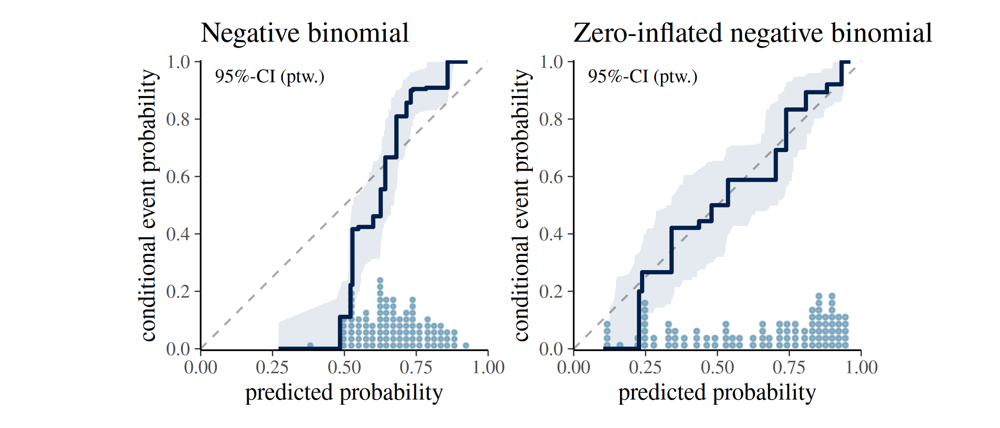
Consistency intervals for model checking
Interpretation of uncertainty interval: Where would the calibration curve of a calibrated model lie?
p1 <- ppc_calibration(
y = pmin(roaches$y, 1),
yrep = pp_nb,
interval = "consistency",
prob = 0.95
) +
labs(title = "Negative binomial")
p2 <- ppc_calibration(
y = pmin(roaches$y, 1),
yrep = pp_zinb,
interval = "consistency",
prob = 0.95
) +
labs(title = "Zero-inflated negative binomial")
p1 + p2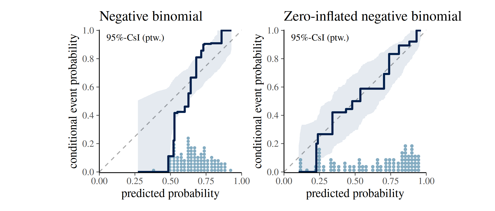
The ppc_calibration() plot indicates that the
negative binomial model is underconfident when
predicting zero-roach outcomes: its calibration curve falls outside the
consistency band, revealing a mismatch between predicted and observed
event rates.
The zero-inflated model’s curve stays within the band and spans a wider range of predicted probabilities, reflecting both better calibration and stronger discrimination between apartments with and without roaches.
LOO calibration
ppc_loo_calibration() uses the brm_glmzinb
object fitted above. The PSIS object is computed from it and then passed
alongside the standard arguments. The comparison below shows the
in-sample calibration curve (left) and the LOO-adjusted curve (right)
for the negative binomial model.
brm_glmzinb <- brms::add_criterion(brm_glmzinb, criterion = "loo")
#> Warning: Found 1 observations with a pareto_k > 0.7 in model 'brm_glmzinb'. We
#> recommend to set 'moment_match = TRUE' in order to perform moment matching for
#> problematic observations.
fit_glmzinb_loo <- brms::loo(brm_glmzinb, save_psis = TRUE)
#> Recomputing 'loo' for model 'brm_glmzinb'
#> Warning: Found 1 observations with a pareto_k > 0.7 in model 'brm_glmzinb'. We
#> recommend to set 'moment_match = TRUE' in order to perform moment matching for
#> problematic observations.
p1 <- ppc_calibration(
y = pmin(roaches$y, 1),
yrep = pp_nb,
interval = "consistency",
prob = 0.95
) +
labs(title = "Negative binomial")
p2 <- ppc_loo_calibration(
y = pmin(roaches$y, 1),
yrep = pp_nb,
psis_object = fit_glmzinb_loo$psis_object,
interval = "consistency",
prob = 0.95
) +
labs(title = "Negative binomial (LOO)")
p1 + p2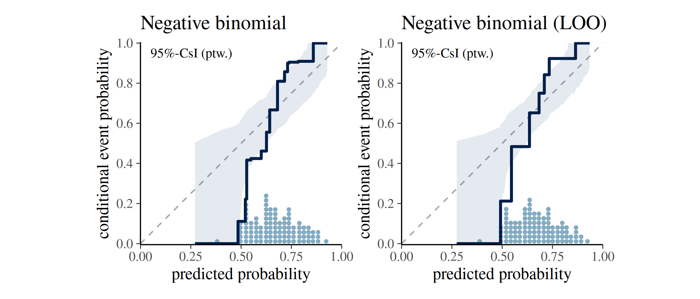
References
Ayer, M., Brunk, H. D., Ewing, G. M., Reid, W. T., & Silverman, E. (1955). An empirical distribution function for sampling with incomplete information. Annals of Mathematical Statistics, 26(4), 641–647.
Dimitriadis, T., Gneiting, T., & Jordan, A. I. (2021). Stable reliability diagrams for probabilistic classifiers. Proceedings of the National Academy of Sciences, 118(8). https://doi.org/10.1073/pnas.2016191118
Säilynoja, T., Johnson, A. R., Martin, O. A., & Vehtari, A. (2025). Recommendations for visual predictive checks in Bayesian workflow. (Preprint). arXiv. https://doi.org/10.48550/arXiv.2503.01509